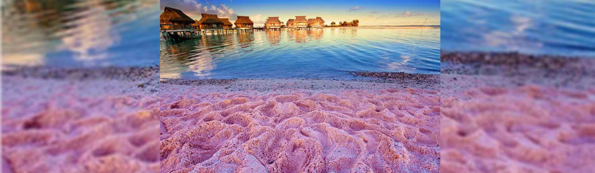

Pontos Turísticos Curiosos
Praia Rosa, nas Bahamas.
Localizada em Harbour Island, nas Bahamas, a praia de areia rosa, mais conhecida como Pink Sand Beach, é a principal atração da região. Localizada ao longo do lado leste do Oceano Atlântico, sua areia rosa pálida se estende por mais de três milhas e tem 50 a 100 pés de largura. A surpreendente cor da areia vem de fragmentos microscópios de coral , que são trazidos até a superfície pelo mar, por esse fato, a coloração não está presente a todo tempo. O rosa se destaca mais na areia molhada na beira da água. Ao contrário de outras partes do mundo, a areia na ilha das Bahamas é sempre fria, então você pode andar livremente com os pés descalços.
Fonte: Boat Shopping International Acesso em 06/12/2019